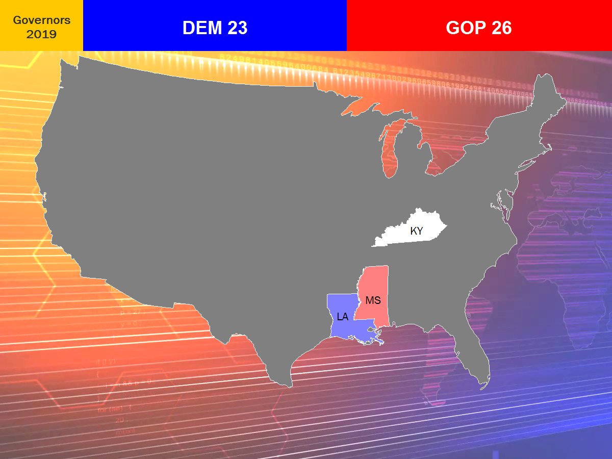

There are three off-year gubernatorial elections this year, which means another model! Note that the Louisiana race uses a top-two jungle primary system, with the jungle primary on October 12 and the runoff on November 16. All other elections will be held on November 5. Be sure to check the live stream when results come in.

| Race | Democrat | Republican | 2018-OLS Expected | 2018-OLS Probability | 2018-LAD Expected | 2018-LAD Probability | 2012 Spread | 2018-M Spread | 2020-NN Probability | Prediction |
| Kentucky | Andy Beshear | Matt Bevin | -- | -- | -- | -- | -- | -- | -- | Tossup |
| Louisiana (Jungle Primary) |
John Bel Edwards | Ralph Abraham Eddie Rispone |
-- | Edwards 55.2% Runoff 44.8% |
-- | Edwards 50.9% Runoff 49.1% |
-- | -- | -- | Leans D | Louisiana (Runoff) |
John Bel Edwards | Eddie Rispone | -- | -- | -- | -- | -- | -- | -- | Tossup |
| Mississippi | Jim Hood | Tate Reeves | -- | -- | -- | -- | -- | -- | -- | Leans R |
Off-year major statewide elections include the following:
Kentucky Governor (Tossup). Incumbent Gov. Matt Bevin (R) is up for reelection against state Attorney General Andy Beshear (D), son of Bevin's predecessor, former Gov. Steve Beshear (D). Despite the deep-red lean of the state, Kentucky still has more registered Democrats than Republicans. This and Bevin's extremely low approval ratings spell trouble for his reelection bid. Bevin's campaign has focused on his ties to President Trump, who won Kentucky by almost 30 points in 2016, and casts Beshear as a liberal Democrat out of step with Kentucky politics. If Bevin wins reelection, he will be the first Republican to serve two consecutive terms in Kentucky state history since Kentucky law allowed governors to serve consecutive terms in the 1990s.
Louisiana Governor (Tossup). Incumbent Gov. John Bel Edwards (D) is running for reelection this year in the state's runoff election against businessman Eddie Rispone (R) after failing to clear 50% in the jungle primary. Similar to Kentucky, Louisiana is a conservative state but with more registered Democrats than Republicans. Gov. Edwards is a conservative Democrat who has a healthy approval rating despite Louisiana's political leanings. However, given that Edwards underperformed slightly in rural areas and faced low turnout in urban areas, it remains to be seen as to whether he will overcome Louisiana's red lean, or whether he would be able to garner some support from those who supported Congressman Ralph Abraham (R) in the jungle primary.
Mississippi Governor (Leans R). Lieutenant Governor Tate Reeves (R) faces off with state Attorney General Jim Hood (D) to replace term-limited Gov. Phil Bryant (R). In a solid-red Deep South state, Hood has been the only Democrat to hold statewide office in Mississippi since 2008, and is likely to be the Democrat's best chance at the Governor's Mansion since Gov. Ronnie Musgrove's (D) re-election campaign in 2003, which he went on to lose to former RNC chair Haley Barbour (R). However, as a legacy of the Jim Crow era, Mississippi state law states that a candidate must both win a majority of the popular vote and a majority of the state house districts to win the election; otherwise, the election goes to the GOP-held Mississippi House of Representatives.